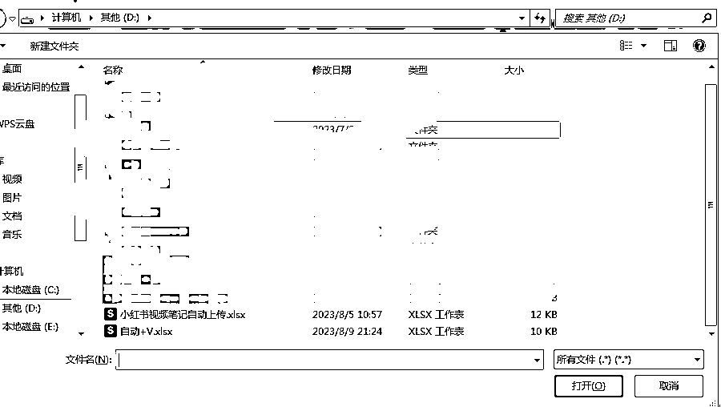
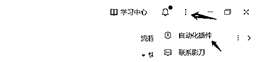
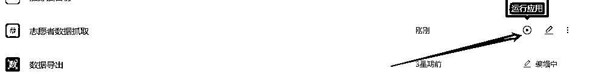
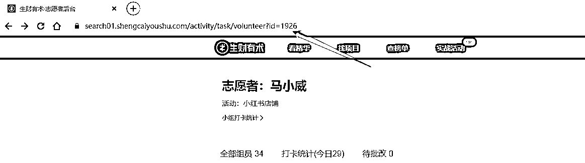
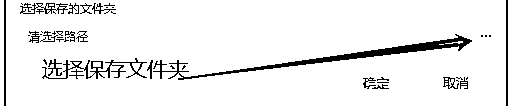
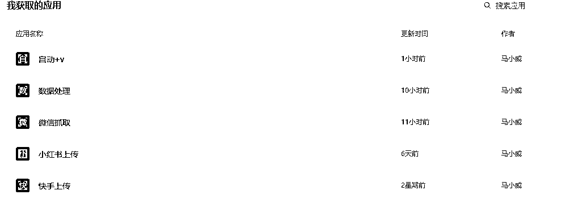
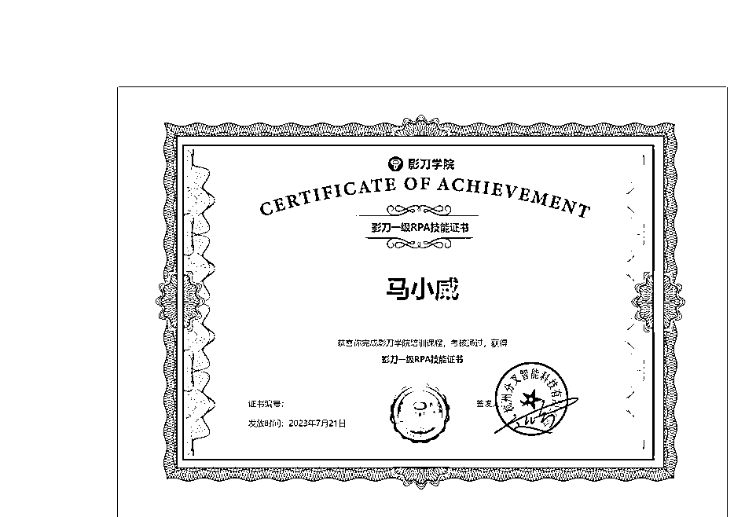

来源：https://p8y34fwle2.feishu.cn/docx/Q2ABdt5taoDeI3xnmg4ci4csnef
先上结论：自动化加V,模仿人工操作不会封号，稳妥起见，建议每次加5-10位好友，至少隔半小时后再操作
作为一名资深志愿者，每次在航海活动时都需要添加很多圈友的微信
手动添加好友觉得有点麻烦，有时候还会出现不知道哪一个已经发送好友申请，
我在想，如果有这么一项服务能解决我这个痛点的话，我一定会毫不犹豫选择。
简单重复的事情交给机器，这样我就能把更多的精力放在更重要的事上，
而这样也能提升我服务的船员们的航海体验了！
1.需要安装影刀
https://www.winrobot360.com/share/activity?inviteUserUuid=118838783572787201
2.下载这个表格
3.获取这个自动+V的影刀应用
https://api.winrobot360.com/redirect/robot/share?inviteKey=6a5435f00951c66a
密码：scys
4.先打开：自动+V.xlsx，这个表格
编辑表格中的关键信息
Sheet1为加微信息
1.打开微信和自动+V.xlsx 的表格
2.在「已获取应用」中，找到「自动+v」机器人，点击「运行应用」
3.选择下载的“自动+v表格”

4.等待即可，不要动鼠标和键盘
为了避免大家没及时停下来，导致意外发生。我已经设置好了，机器加完第10个人，就会自动停止。
各位隔一段时间后，再重新运行就可以。
1.获取影刀应用
https://api.winrobot360.com/redirect/robot/share?inviteKey=bbf52b823e344c69
密码scys123
2.浏览器安装插件
方式一：用户头像-工具-自动化插件
方式二：新建或者打开一个应用》右上角三个点》自动化插件 》点击安装

3.在「已获取应用」中，找到「志愿者数据抓取」机器人，点击「运行应用」

4.在谷歌浏览器打开这个网址（志愿者后台）


6.等待完成表格出现在你选择的文件夹中
凡是你日常工作、项目中的相关操作符合以下条件：
1.重复的
2.有逻辑性的
都可以使用RPA，譬如，微商的朋友批量给客户发营销信息、快手自动发视频、视频号自动发视频、小红书店铺的船员需要批量定时发布笔记、媒体人需要批量发布文章等等等等...
甚至还可以利用RPA来抓取对标账号的数据、以及各大网站的图片和视频等等，RPA真的能让我们的工作更轻松，这也是我为啥专注做RPA的理由之一。

我是马小威，一位目前专注在RPA提升工作效率的资深志愿者。
如果你也想要提升工作效率欢迎你和我一起交流~V:mxw4260
